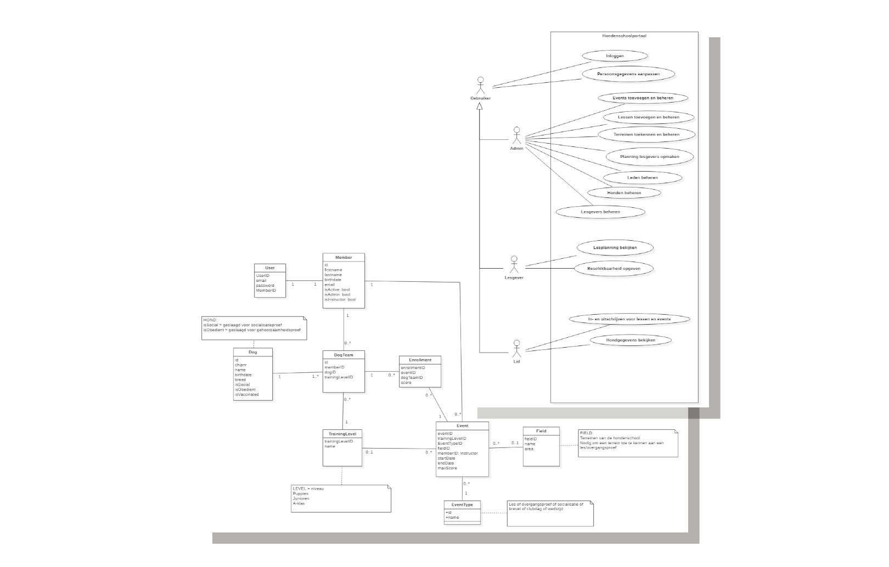

Webapplicatie in Angular
Digitale hondenschool
Webapplicatie in Angular
Inleiding
In het derde jaar van de opleiding kregen we voor het vak 'Angular' de opdracht om een full stack webapplicatie te maken. Het project had enkele vereisten. Zo moest de backend gemaakt worden in ASP.NET Core (.NET 5), de API moest beveiligd zijn aan de hand van JWT-tokens, en het gebruikte data model moest minstens 5 tabellen bevatten die in een relationele databank werden opgeslagen.
De frontend moest, uiteraard, ontwikkeld worden in Angular. Ook hier waren enkele eisen voor bepaald. Er moest een dashboard zijn voor iedereen. Gebruikers moesten kunnen inloggen en afhankelijk van hun rol andere mogelijkheden krijgen. Zo moest een volledige CRUD (Create, Read, Update, Delete) functionaliteit aanwezig zijn voor de administrator, voor leden moest een functionaliteit naar keuze uitgewerkt worden en het design moest responsief zijn.
Het onderwerp van de opdracht was een vrije keuze. Sinds ik in het najaar van 2021 hondeneigenaar ben en naar de hondenschool ging, besloot ik daarvoor een applicatie uit te werken.
| Team: | Kevin Vandeputte |
| Technologie: | ASP.NET Core (.NET 5), Angular 12, UML |
| Looptijd: | Vierde kwartaal academiejaar 2021-2022 |
Concept
Aangezien de opdracht duidelijk geformuleerd en afgelijnd was leek de conceptfase overbodig, maar als ik iets had geleerd uit het project ' Onkostenapplicatie Thomas More' dan was het het belang van een goede analyse en voorbereiding.
Daarom maakte ik voor dit project ook een usecasediagram op. Dit liet me toe te controleren dat ik geen enkele eis over het hoofd zag en het gaf me een houvast tijdens het ontwikkelproces. Ook maakte ik een datamodel dat me zou toelaten de usecases te ontwikkelen.
Ontwikkeling
Dit was de eerste keer dat ik een project van deze omvang alleen op mij nam, want ik had mijn usecases en datamodel uitgebreider dan nodig gemaakt.
Tot dan toe waren grotere projecten steeds teamwerk geweest. Dit vormde meteen een uitdaging. Zo duurt een academisch kwartaal voor ons ongeveer 8 weken. Dus op deze 8 weken tijd diende ik een full stack applicatie te ontwikkelen en dat terwijl het Angular framework volledig nieuw voor me was. 8 weken lijken veel, maar niet als die gecombineerd wordt met een fulltime job. Ik besefte al snel dat ik niet alles zou kunnen uitwerken zoals ik het in mijn hoofd had. Ik koos ervoor om bepaalde usecases te laten vallen maar de usecases die over bleven wel heel verder uit te werken en alle mogelijke scenario's te testen. Op die manier voldeed ik nog steeds aan de vooropgestelde eisen en waren deze ook meer dan behoorlijk ingevuld.
Ik had ook kunnen kiezen om meer usecases uit te werken, maar dan zouden alle usecases minder volledig zijn uitgewerkt. Ik leerde in dit project snel keuzes te maken door altijd kwaliteit boven kwantiteit te stellen.
Inschrijvingsmodule
Mogelijkheid tot inschrijven voor niet-leden.
Dashboard
Dashboard voor alle leden.

Admin functionaliteit
Leden- en eventbeheer
Swagger implementatie
Interactieve API documentatie.
Communicatie
Het afsluiten van zo'n project, ook al is het in een academische context, gaat steeds gepaard met een evaluatiemoment. Dit kan ook gezien worden als communicatie, want ook hier is het de bedoeling om het project te promoten, de volledigheid ervan te demonstreren en de extraatjes te onderstrepen. Ik werkte voor dit evaluatiemoment een scenario uit zodat ik tijdens het demo-moment kon aantonen dat ik aan alle eisen voldeed maar ook de sterke kanten van mijn project kon toelichten. Zo had ik bijvoorbeeld ook meer tijd gespendeerd aan de user experience (UX) en creëerde ik een notificatiesysteem dat de gebruiker feedback geeft.